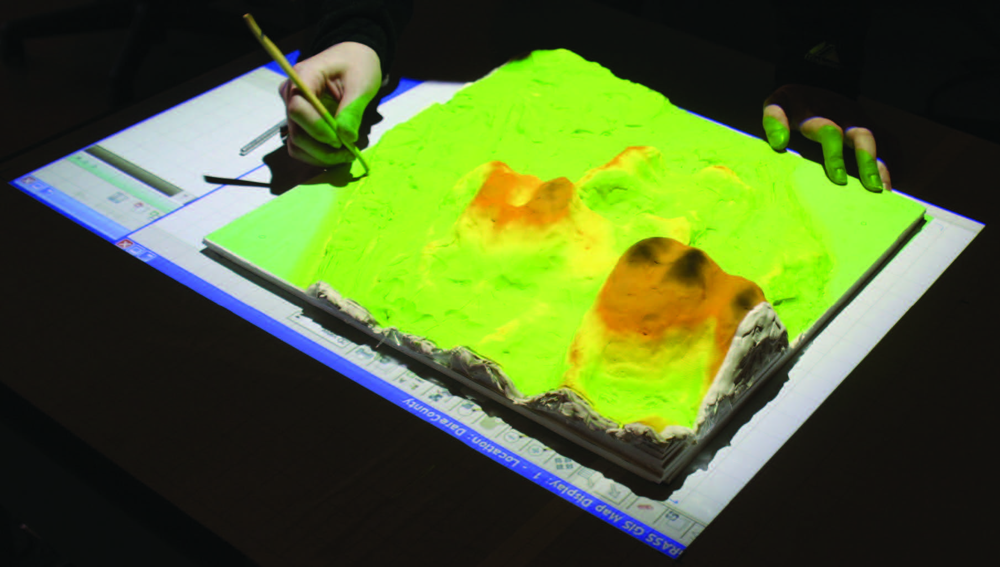
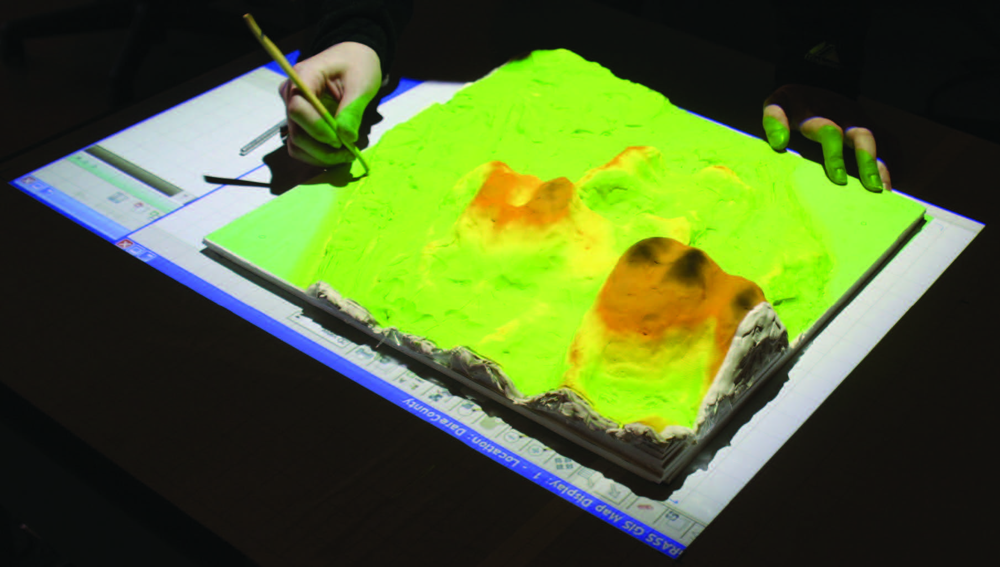
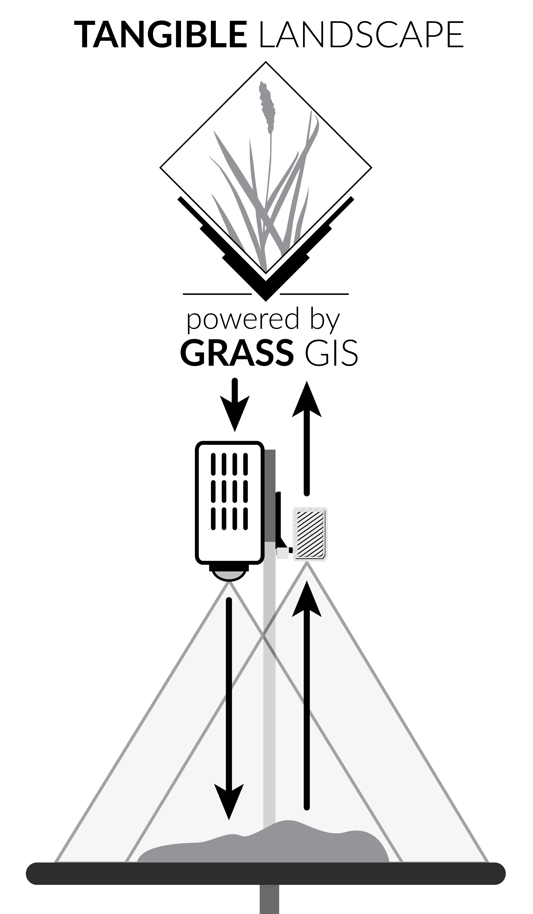

ISPRS 2016
Tangible Landscape
Cognitively grasping the flow of water
Brendan Harmon, Anna Petrasova, Vaclav Petras, Helena Mitasova, & Ross Meentemeyer

With Tangible Landscape you can hold a GIS in your hands - feeling the shape of the earth, sculpting its topography, and directing the flow of water.
 

An evolution of Illuminating Clay and the Tangible Geospatial Modeling System
Image source: MIT Media Lab
Tangible Landscape couples a digital and a physical model through a continuous cycle of 3D scanning, geospatial modeling, and projection
A collaborative environment for tangible freeform modeling, object detection, real-time geospatial analytics, 3D rendering, and immersion / VR


Tangible Landscape is designed to enable a rapid iterative process of observation, hypothesizing, testing, and inference
How do 3D tangible interfaces for GIS mediate spatial thinking about landscape processes like water flow?

Participants were asked to sculpt a given landscape in 10 minutes using a) a digital modeling program and then b) Tangible Landscape's water flow analytic
Their perfomance was assessed using cellular statistics and hydrological simulation
3D modeling program designed for intuitive terrain sculpting
Implemented in GRASS GIS as the module r.sim.water
a) The reference landscape, b) the mean of digitally sculpted models, c) and the mean of tangibly sculpted models
Water depth on a) the reference landscape, b) the mean of digitally sculpted models, c) and the mean of tangibly sculpted models
The difference between the reference water depth and a) itself, b) the mean water depth of digitally sculpted models, c) and the mean water depth of tangibly sculpted models
The depth of depressions in a) the reference landscape, b) the mean of digitally sculpted models, c) and the mean of tangibly sculpted models
| Exercise | Cells |
|---|---|
| Reference | 0% |
| Digital | 44% |
| Tangible | 17.66% |
Participants focused on making streams lower than their surroundings, rather than directing continuous flows
While most participants did not clearly understand how topography directs water flow at first, they began to learn about curvature and continuity with the aid of the tangible interface
We observed participants using an iterative modeling process with the tangible interface:

Tangible Landscape plugin for GRASS GIS
GRASS GIS module for importing data from Kinect v2
Repository with experiment instructions, scripts, data, and results

Read our book or visit our website at http://tangible-landscape.github.io/ and give it a try